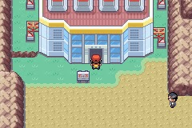
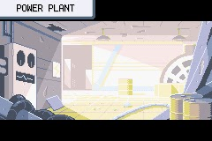
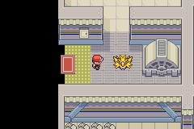
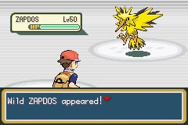

บทที่ 18 / 29
โรงไฟฟ้าร้าง<Power Plant>
❖
ในนี้จะมีโปเกมอนไฟฟ้ามากมาย (รวมทั้งปิกาจูด้วย) ทางภายในไม่ซับซ้อนมาก เข้าไปข้างในสุด จะพบโปเกมอนในตำนาน ธันเดอร์<Zapdos> เลเวล50 ธาตุไฟฟ้า/ปีก (จะจับก็ได้ไม่จับก็ได้เพราะโมเกมอนตำนานมาสามตัวนะ ^^)




เมื่อเสร็จธุระแล้ว ให้ไปยังเมืองยามาบูกิ (เป็นเมืองที่อยู่ตรงกลางระหว่างเมืองฮานาดะ ทามามูชิ คุจิบะ และเมืองชิออน) เข้าทางด้านไหนก็ได้ เราจะให้น้ำชาแก่ยามไป แล้วเราจะเข้าเมืองได้